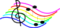

EXPLANATION OF THE GLOSSING SYSTEM
(to understand how I describe the signs in this translation).
1. ME VISIT (2h)YOU WHILE WORLD SILENT.
ME LIFT-UP (2h)YOU, YOUR FEAR DISSOLVE.
(2h)YOU WILL SEE MY FACE, ENTER MY SPECIAL PLACE.
NOW CALM-DOWN; KNOW-THAT ME WITH (2h)YOU.
2. DON'T GIVE-UP HOPE, ME CAN SAVE (2h)YOU.
ME BECOME EYES FOR PEOPLE BLIND.
DURING DARKEST NIGHT, ME BECOME YOUR LIGHT.
COME-ON REST, WHILE ME PROTECT.
Refrain:
DON'T FEEL AFRAID, ME ALWAYS WITH (2h)YOU.
ME SUMMON"each" USE YOUR NAME.
COME-ON, FOLLOW ME, ME WILL BRING-TO-heaven HOME.
ME LOVE (2h)YOU, KNOW-THAT (2h)YOU NOW MINE.
3. PEOPLE MOURN, ME HELP-lf THEM-lf FEEL STRONGER.
IF THEY-rt FEEL SHAME, ME HELP THEM-rt HEAL.
(<) FUTURE, BLIND WILL SEE. (>) LAME #ALL-OF-THEM-rt RUN FREE.
AND (2h)#ALL WILL KNOW MY NAME. Refrain
4. MY PERFECT WORD CAN HELP (2h)YOU FREE.
PEACE ME alt.GIFT-TO (2h)YOU, WORLD CAN'T EQUAL.
ME SUMMON WITH YOUR NAME, TAKE-AWAY YOUR PAIN.
STAND-UP, NOW WALK, AND LIVE. Refrain
Notes: ME - Underlined words are honorific indices ("indexes"), using the FT of the upturned palm to indicate who is being honored.
LIFT-UP - (2h)[B], PO down are held high and swoop down while supinating and then rise up again as if helping something mature and the hands continue up and FTs are directed > Heaven.
FEAR - (2h)[5], POs away, FOs up, hands are held far from body and move back to body in a wavy pattern.
CALM-DOWN - (2h)[5], POs down, FOs away, descend slightly, stop and then descend further.
KNOW-THAT - Starts like KNOW but twists and descends, looking almost like DON'T-KNOW except the hand twists down at the end.
SUMMON - DH [B] taps NDH [B], PO down, FO > signer, then moves > signer while closing to an [A], PO away from signer, FO up, and moving up.
COME-ON - (2h)[B^] move in circles pivoting at the wrists to beckon someone to do something.
DON'T - (2h)[B], POs down, cross at wrists, then uncross moving horizontally and emphatically. For a QuickTime movie of this sign, see ASL browser - don't.
LIGHT - Same sign as BRIGHT and CLEAR, that is, (2h)[O^], POs away, FOs up, open to (2h)[5], while separating. For a QuickTime file of this sign, see ASL Pro: Light - 1.
#ALL-OF-THEM - [A], PO up, FO > DS is held at DS then swings away in an arc and ends [L^], PO up, FO > NDS.
(2h)#ALL - (2h)[A], POs ><, FOs up, are held at shoulder height and move away while opening to (2h)[L].
Lyrics:
1. I will come to you in the silence,
I will lift you from all our fear.
You will hear my voice, I claim you as my choice,
be still and know I am here.
Refrain: Do not be afraid, I am with you.
I have called you each by name.
Come and follow me, I will bring you home;
I love you and you are mine.
2. I am hope for all who are hopeless,
I am eyes for all who long to see.
In the shadows of the night, I will be our light,
come and rest in me.
3. I am strength for all the despairing.
Healing for the ones who dwell in shame.
All the blind will see, the lame will all run free,
and all will know my name.
4. I am the Word that leads all to freedom,
I am the peace the world cannot give.
I will call your name, embracing all your pain,
stand up, now walk, and live!
To hear a partial performance of this, go to http://jukebox.ocp.org/preview/11716_1_15.mp3